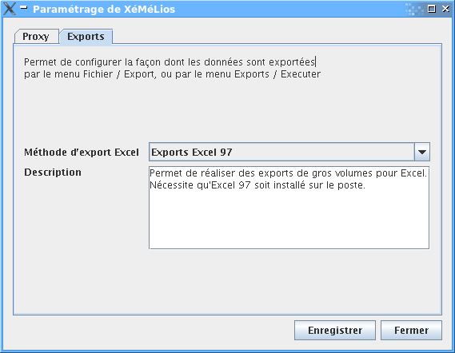

Configuration et paramétrage de XéMélios
Dans XéMéLios, l'environnemnent conditionne le comportement des recherches. Suivant les types de documents, certains paramètres sont modifiables, comme le nombre maximal de lignes de résultat affichés en recherche par exemple.
Les données d'environnement peuvent étre modifiées soit au niveau global de XéMéLios, soit pour chaque fenêtre de recherche.
Pour modifier l'environnement au niveau global, il faut passer par le menu Fichier / Environnement...
Les modifications d'environnement faites par ce biais seront appliquées à chaque nouvelle fenêtre de recherche. Ces modifications ne seront pas appliquées aux fenêtre de recherche déjà ouvertes.
Pour modifier l'environnement d'une fenêtre de recherche, il faut passer par le bouton d'environnement de la barre d'outil de la fenêtre de recherche :
Les modifications d'environnement apportées à une fenêtre de recherche ne concernent pas les autres fenêtres de recherche déjà ouvertes ou celles qui seront ouvertes par la suite.
Dans les deux cas, on accède à une boite de dialogue qui propose l'ensemble des informations environnementales modifiables :
Comme l'illustre la copie d'écran ci-dessus, il est notamment possible de modifier le nombre maximum de lignes de résultats affichés sur une page.
Les modifications environnementales réalisées soit au niveau global, soit au niveau local ne sont jamais enregistrées : lorsque l'utilisateur quitte XéMéLios, ces modifications sont perdues. Ceci permet de conserver une configuration par défaut adaptée aux différents types de documents et à l'usage courant.
Ce menu permet de modifier la configuration générale de XéMéLios. Il donne accès à une boite de dialogue comportant plusieurs onglets.
Cet onglet permet de configurer l'accès à internet depuis XéMéLios. Pour pouvoir se mettre à jour, XéMéLios doit accéder à internet. Certains sites utilisent un proxy pour accéder à internet. Cet onglet permet de définir l'ensemble des informations nécessaires à l'utilisation d'un proxy.
Les informations nécessaires sont à demander à l'administrateur réseau du site. Pour le réseau du trésor, le serveur proxy est proxy.bercy.cp et le port est 3128.
Il est possible de tester les valeurs saisies : XéMéLios tentera d'accéder au fichier de mise à jour. Si le paramétrage est incorrect, XéMéLios affichera le message d'erreur.
Il est aussi possible de charger l'ancien paramétrage (celui des version 3.1.x).
Cet onglet permet de configurer la façon dont les exports de données seront réalisés.

Plusieurs méthodes d'exports sont proposées :
Cet onglet permet de configurer l'adresse à partir de laquelle Xemelios cherche les mises à jour disponibles.
Normalement, cette valeur n'a pas de raison d'être modifiée. Il existe cependant deux cas où elle peut l'être :
Attention, une adresse invalide entrée ici empêchera Xemelios de se mettre à jour.